反馈控制系统学习笔记#6
Frequency Response
频率响应指的是线性系统对于 sinusoidal inputs 的响应。
考虑以下系统：
$$
G(s) = \frac{Y(s)}{U(s)}
$$
其中输入 \(u(t)\) 是一个正弦波且振幅为 \(A\)：
$$
u(t) = A\sin (\omega_0 t)
$$
它的拉普拉斯变换为：
$$
U(s) = \frac{A\omega_0}{s^2 + \omega_0^2}
$$
那么：
$$
Y(s) = G(s)\frac{A\omega_0}{s^2+\omega_0^2}
$$
通过一些证明可以得出结论，对于一个稳定的 LTI 系统 \(G(s)\)，在输入为 \(u(t) = A\sin (\omega_0 t)\) 的情况下，steady-state 的输出为：
$$
y(t) = B\sin (\omega_0 t + \phi)
$$
即输出同样是 sinsoidal，与输入有着相同的频率，在振幅与相位上有变化：
$$
\frac{B}{A} = |G(s)|_{s=j\omega_0}\ \mbox{and}\ \phi = \angle G(s)|_{s=j\omega_0}
$$
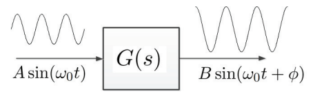
伯德图（Bode plot）
The Bode plot shows the real and imaginary parts of the logarithm of \(G(j\omega)\) since
$$
\log Me^{j\phi} = \log M + j\phi \log e
$$
- Magnitude plot: the logarithm of magnitude \(\log |G(j\omega)|\) versus \(\log \omega\) or \(20 \log|G(j\omega)|\mbox{db}\) versus \(\log \omega\) where decibels (db) is defined as \(\mbox{db} = 20 \log |G(j\omega)|\).
- Phase plot: the phase versus \(\log \omega\).
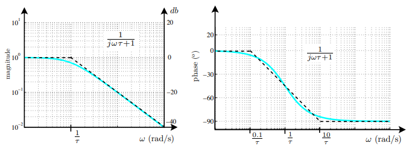
极坐标图（Polar plot）
系统 \(G(s)\) 的极坐标图表示了复数 \(G(j\omega) = x+jy\) 在 \(\omega\) 从 \(0\) 向 \(\infty\) 变化时的轨迹。
其中：
$$
\begin{align}
|G(j\omega)| &= \sqrt{x^2 + y^2}
\newline
\angle G(j\omega) &= \tan^{-1}(\frac{y}{x})
\newline
\mathcal{R}[G(j\omega)] &= |G(j\omega)|\cos [\angle G(j\omega)]
\newline
\mathcal{I}[G(j\omega)] &= |G(j\omega)|\sin [\angle G(j\omega)]
\end{align}
$$
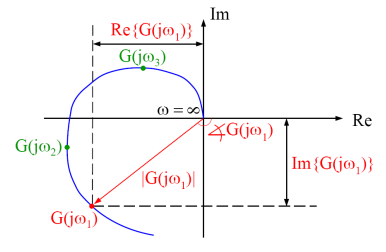
极坐标图可直接从伯德图中得出。
Transfer Function Terms
对于各种系统的传递函数，可将其分解为三类组成部分：
poles/zeros at origin: \(K(j\omega)^n\)
poles/zeros on real-axis: \((j\omega \tau + 1)^{\pm 1}\)
complex conjugate poles/zeros: \([(\frac{j\omega}{\omega_n})^2+2\zeta (\frac{j\omega}{\omega_n})+1]^{\pm 1}\)
\(K(j\omega)^n\)
伯德图
用 decibel 表示：
$$
20\log K |(j\omega)^n| = 20\log K + n\times 20\log |j\omega|
$$
对于 gain \(K\) 来说它的 magnitude plot 是一条水平线，phase plot 在 \(K > 0\) 时为 \(0^{\circ}\) ，在 \(K < 0\) 时为 \(180^{\circ}\)。
对于 \(n \neq 0\) 时的 \((j\omega)^n\)：
magnitude plot 为一条直线且斜率为 \(n\times 20\ \mbox{db/decade}\)
当 \(\omega = 1\mbox{rad/s}\) 时 magnitude plot 等于 \(1\ \mbox{(0 db)}\)
phase plot 是一条水平线且 \(\phi = n \times 90^{\circ}\)
因此绘制 \(K(j\omega)^n\) 的 magnitude plot 最简单的方法就是在频率 \(\omega = 1\mbox{rad/s}\) 上取值 \(\log K\)，并作一条经过该点的斜率为 \(n\) 的直线。
极坐标图
当 \(n = 0\) 时，即常量 \(K\)，在极坐标图上对应为复平面上的一个点且 magnitude 为 \(|K|\)，phase 为 \(0^{\circ}\)。
当 \(n > 0\) 时，在极坐标图上对应为一条从原点出发，到 \(\infty\) 结束的直线，并且它与 real-axis 的角度为 \(n \times 90^{\circ}\)。
当 \(n < 0\) 时，在极坐标图上对应为一条从 \(\infty\) 出发，到原点结束的直线，并且它与 real-axis 的角度为 \(n \times 90^{\circ}\)。
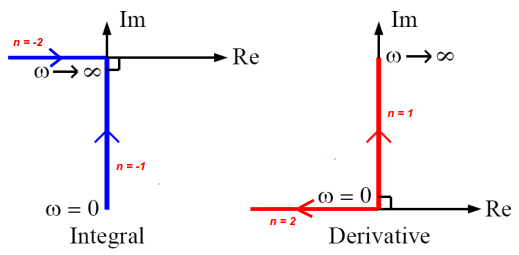
First-Order Zero \((j\omega \tau + 1)\)
伯德图
The magnitude is given by \(\sqrt{(\omega \tau)^2 + 1}\) or \(20\log \sqrt{(\omega \tau)^2 + 1}\ \mbox{db}\) and follows low- and high- frequency asymptotes.
- For \(\omega \tau \ll 1\), \(j\omega \tau + 1 \approx 1 \equiv 0\ \mbox{db}\).
- For \(\omega \tau \gg 1\), \(j\omega \tau + 1 \approx j\omega \tau \equiv 20\log |j\omega \tau|\ \mbox{db}\).
- \(\omega_c = \frac{1}{\tau}\) is called the break point and is equal to the magnitude of the system pole, maximum error between actual curve and asymptotes is \(3\ \mbox{db}\).
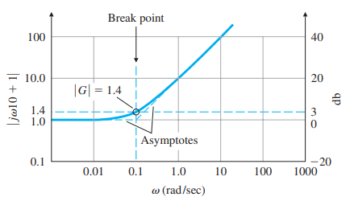
The phase is given by \(\phi = \tan^{-1}(\omega \tau)\) and follows low- and high- frequency asymptotes.
- For \(\omega \tau \ll 1\), \(\angle 1 = 0^{\circ}\).
- For \(\omega \tau \gg 1\), \(\angle j\omega \tau = 90^{\circ}\).
- For \(\omega \tau \cong 1\), \(\angle (j\omega \tau + 1)|_{\omega = 1/\tau} \cong 45^{\circ}\).
- The phase plot is approximated by 3 asymptotes: two horizontal lines at \(0^{\circ}\) and \(90^{\circ}\); and a straight line with slope of \(45^{\circ}/\mbox{decade}\) passing through \((1/\tau, 45^{\circ})\), \((0.1/\tau, 0^{\circ})\) and \((10/\tau, 90^{\circ})\).
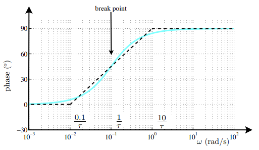
极坐标图
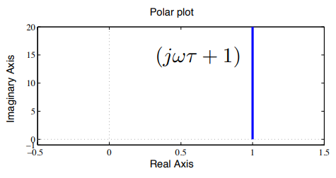
RHP Zero
有 zero 在 RHP 上，那么系统为 nonminimum phase system。
例如这两个传递函数：
$$
G_1(s)=10\frac{s+1}{s+10}\ \mbox{and}\ G_2(s)=10\frac{s-1}{s+10}
$$
它们的伯德图为：
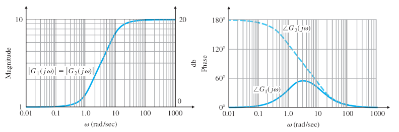
First-Order Pole \(\frac{1}{j\omega \tau + 1}\)
伯德图
Magnitude:
$$
\left|\frac{1}{j\omega \tau + 1}\right| = \frac{1}{\sqrt{(\omega \tau)^2 + 1}}\equiv -20\log \sqrt{(\omega \tau)^2 + 1}\ \mbox{db}
$$
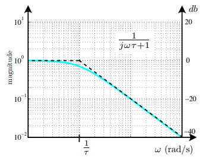
Phase:
$$
\phi = \angle \left(\frac{1}{j\omega \tau + 1}\right) = -\tan^{-1}\omega \tau
$$
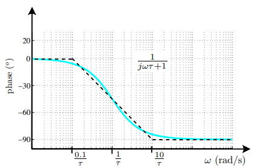
极坐标图
$$
G(j\omega) = \frac{1}{j\omega \tau + 1} = \frac{1}{\sqrt{(\omega \tau)^2 + 1}}\angle (-\tan^{-1}\omega\tau)
$$
First-order pole 的极坐标图位于第四象限中：
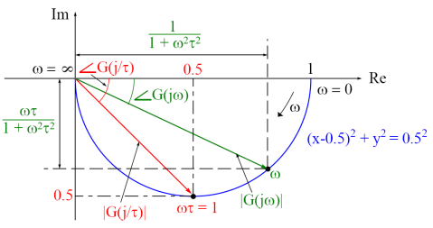
RHP Pole
与 RHP zero 类似，RHP pole 也会对 phase plot 造成影响。不同于 RHP zero 的 low frequency phase 为 \(+180^{\circ}\)，RHP pole 的 low frequency phase 为 \(-180^{\circ}\)。
Complex Conjugate Poles
伯德图
Consider the complex conjugate poles:
$$
G(j\omega) = \left[\left(\frac{j\omega}{\omega_n}\right)^2 + 2\zeta\left(\frac{j\omega}{\omega_n}\right) + 1\right]^{-1}
$$
The magnitude is given by
$$
\left|\frac{1}{\left[\left(\frac{j\omega}{\omega_n}\right)^2+2\zeta\left(\frac{j\omega}{\omega_n}\right)+1\right]}\right|=\frac{1}{\sqrt{\left(1-\frac{\omega^2}{\omega_n^2}\right)^2+\left(2\zeta\frac{\omega}{\omega_n}\right)^2}}\equiv-20\log\sqrt{\left(1-\frac{\omega^2}{\omega_n^2}\right)^2+\left(2\zeta\frac{\omega}{\omega_n}\right)^2}
$$
The phase is given by
$$
\phi = \angle \left(\frac{1}{\left[\left(\frac{j\omega}{\omega_n}\right)^2+2\zeta\left(\frac{j\omega}{\omega_n}\right)+1\right]}\right)=-\tan^{-1}\left[\frac{2\zeta (\omega/\omega_n)}{1-(\omega / \omega_n)^2}\right]
$$
At low frequencies, \(\omega \ll \omega_n\), the magnitude is
$$
\frac{1}{\sqrt{\left(1-\frac{\omega^2}{\omega_n^2}\right)^2+\left(2\zeta\frac{\omega}{\omega_n}\right)^2}}\approx 1 \equiv 0\ \mbox{db}
$$
and the phase is
$$
-\tan^{-1}\left[\frac{2\zeta (\omega/\omega_n)}{1-(\omega / \omega_n)^2}\right]=0^{\circ}
$$
At high frequencies, \(\omega \gg \omega_n\), the magnitude is
$$
\frac{1}{\sqrt{\left(1-\frac{\omega^2}{\omega_n^2}\right)^2+\left(2\zeta\frac{\omega}{\omega_n}\right)^2}}\approx \frac{1}{\left(\frac{\omega^2}{\omega_n^2}\right)} \equiv -40\log\left(\frac{\omega}{\omega_n}\right)\ \mbox{db}
$$
and the phase is
$$
-\tan^{-1}\left[\frac{2\zeta (\omega/\omega_n)}{1-(\omega / \omega_n)^2}\right]=-180^{\circ}
$$
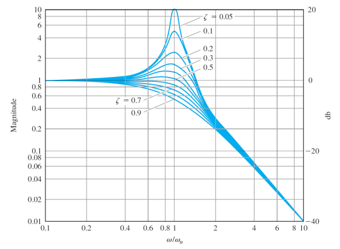
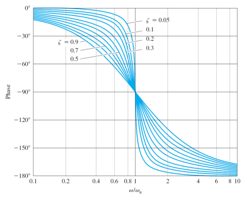
Bandwidth, Resonant Peak and Frequency 的定义
Bandwidth, \(\omega_{BW}\)
(output attenuated by a factor of 0.707 times the input)
Resonant frequency, \(\omega_r\)
\(\omega_r = \omega_n \sqrt{1-2\zeta^2}\)
Resonant peak, \(M_r\)
\(M_r = |G(j\omega_r)| = \frac{1}{2\zeta \sqrt{1-\zeta^2}}\)
如图：
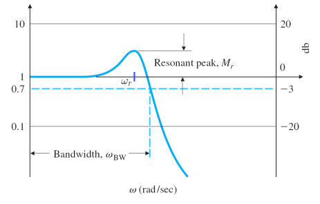
极坐标图
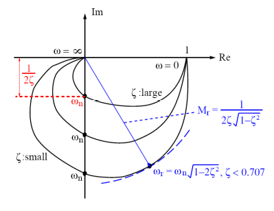
Transport Lag \(e^{-j\omega t_d}\)
$$
|e^{-j\omega t_d}| = |\cos \omega t_d - j \sin \omega t_d| = 1
$$
$$
\angle (e^{-j\omega t_d}) = -\omega t_d \ \mbox{rad} = -\omega t_d \times \frac{180^{\circ}}{\pi}
$$
Characteristics of General Bode and Polar Plots
Bode Plot
Low Frequency
Consider the following transfer function (with no RHP zeros):
$$
G(j\omega) = \frac{K(j\omega\tau_1 + 1)(j\omega\tau_2 + 1)\dots}{(j\omega)^{N}(j\omega\tau_a+1)(j\omega\tau_b+1)\dots}e^{-j\omega t_d}
$$
At low frequencies, the transfer function reduces to:
$$
G(j\omega)|_{\omega \rightarrow 0} \approx \frac{K}{(j\omega)^N}
$$
The magnitude is
$$
|G(j\omega)|_{\omega \rightarrow 0} = K\omega^{-N} \equiv 20\log K - 20 N \log \omega\ \mbox{db}
$$
斜率为 \(N\times -20\ \mbox{db/decade}\)
\(K\) 可在 \(\omega = 1\ \mbox{rad/s}\) 处取得
Transport lag term 对 magnitude plot 没有影响
The phase is
$$
\angle G(j\omega)|_{\omega \rightarrow 0} = -N\times 90^{\circ}
$$
High Frequency
Consider the following transfer function (with no RHP zeros):
$$
G(j\omega) = \frac{K(j\omega\tau_1 + 1)(j\omega\tau_2 + 1)\dots (j\omega\tau_m + 1)}{(j\omega)^{N}(j\omega\tau_a+1)(j\omega\tau_b+1)\dots (j\omega\tau_n+1)}e^{-j\omega t_d}
$$
At high frequencies, the transfer function reduces to:
$$
G(j\omega)|_{\omega \rightarrow \infty} \approx \frac{K\tau_1\tau_2\dots\tau_m}{\tau_a\tau_b\dots\tau_n(j\omega)^{N-m+n}}e^{-j\omega t_d}
$$
The magnitude is
$$
|G(j\omega)|_{\omega \rightarrow \infty} = \left|\frac{K\tau_1\tau_2\dots\tau_m}{\tau_a\tau_b\dots\tau_n(\omega)^{N-m+n}}\right|\equiv 20\log \frac{K\tau_1\tau_2\dots\tau_m}{\tau_a\tau_b\dots\tau_n}-20(N-m+n)\log \omega\ \mbox{db}
$$
- 斜率为 \(-20(N+n-m)\ \mbox{db/decade}\) 即 pole excess = number of poles - number of zeros
对于 phase plot（minimum phase system, no RHP poles and zeros）
如果 \(t_d = 0\)，那么 \(\angle = -90\times (N+n-m)\ \mbox{deg}\)
如果 \(t_d \neq 0\)，那么 \(\angle = -90\times (N+n-m) - \omega t_d \frac{180}{\pi}\ \mbox{deg}\)
Polar Plot
Consider:
$$
G(j\omega) = \frac{K(j\omega\tau_1 + 1)(j\omega\tau_2 + 1)\dots (j\omega\tau_m + 1)}{(j\omega)^{N}(j\omega\tau_a+1)(j\omega\tau_b+1)\dots (j\omega\tau_n+1)}e^{-j\omega t_d}
$$
Low Frequency
$$
G(j\omega)\approx \frac{K}{(j\omega)^N}
$$
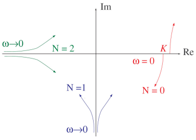
High Frequency
At high frequencies, the transfer function reduces to:
$$
G(j\omega)\approx \frac{K\tau_1\tau_2\dots\tau_m}{\tau_a\tau_b\dots\tau_n(j\omega)^{N-m+n}}e^{-j\omega t_d} = 0\angle\left[-90(N+n-m)-\omega t_d \frac{180}{\pi}\right]
$$
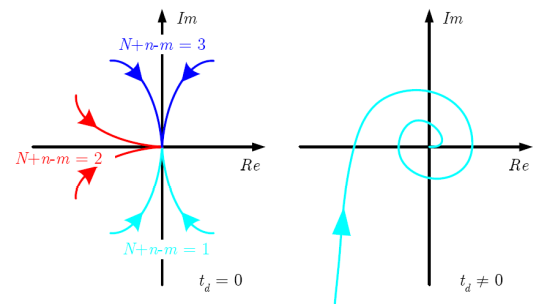
总结
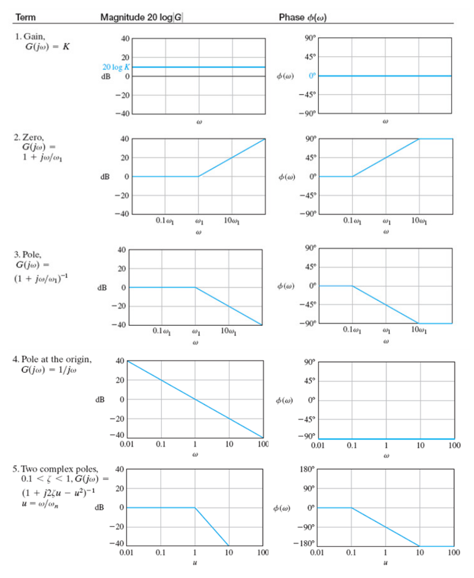
 wechat
wechat alipay
alipay